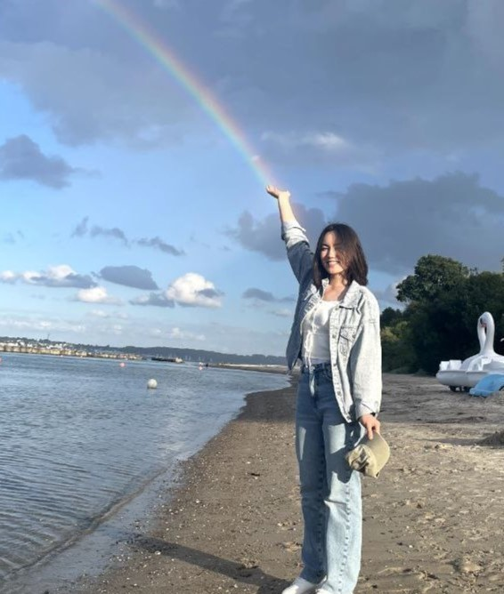

About me
My name is Aisuluu, and I come from Osh, Alay. I graduated from School 27 Joro Alimov. Currently, I am pursuing a degree in Computer Science at Ala-Too International University. I am 19 years old, soon to be 20. I am the second child in my family. In my leisure time, I enjoy horse riding, a skill I have developed over the years. Perhaps my upbringing surrounded by mountains has contributed to my deep appreciation for nature.
You can reach me using the following contact information. Please feel free to get in touch:
- Email: aisuluu.sharipova@alatoo.edu.kg
- Phone: +996703531408
- Instagram: suluumm_
Looking forward to hearing from you!